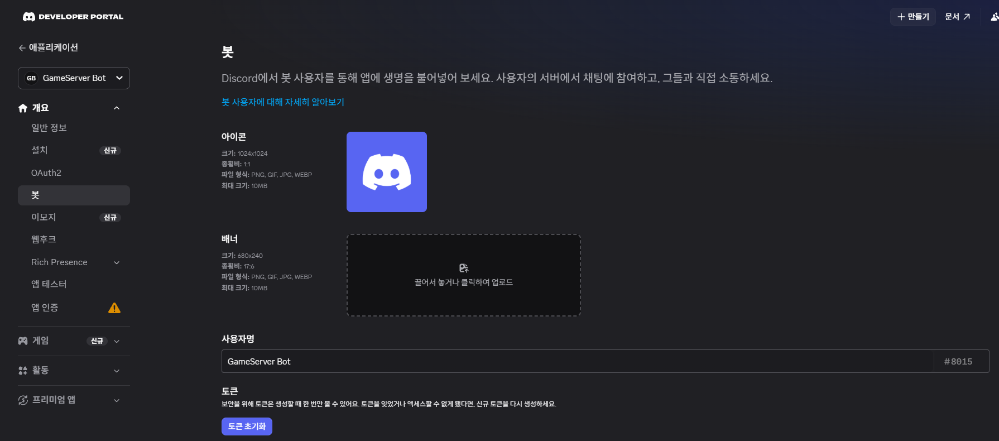

판매자와 화면 공유
② 설치 당일
메모할 값 (4~7절에서 하나씩 나옵니다. 메모장에 적어 두세요 — 판매자에게 보내지 말고, 설치 때 직접 붙여넣습니다)
8. 판매자와 함께 설치하기 (화면 공유, 20~30분)
여기부터는 판매자가 화면 공유로 안내합니다. 고객님은 AWS 루트 사용자로 로그인한 화면을 공유하고, 판매자가 알려 주는 대로 입력합니다.
- CloudShell — AWS 화면 안에서 바로 쓰는 명령 입력 창. 설치는 여기서 합니다 (AWS 화면 위쪽
>_모양 아이콘) - 판매자가 보내 드린 설치 파일을 CloudShell 에 올리고, 판매자가 알려 주는 명령을 입력합니다
- 설치 중 물어보는 값 → 메모장에서 복사해 붙여넣기:
- Application ID → 서버 ID → Public Key → 관리자 역할 ID
- 웹후크 주소: 입력해도 화면에 글자가 안 보이는 게 정상입니다. 한 번 붙여넣고 엔터
- 마지막에 요약이 나오면 판매자와 함께 확인하고
yes입력 → 이때부터 서버가 처음 켜지고 요금이 시작됩니다 (처음 설치는 10~15분)- 한/영 키를 눌러 영문 상태에서
yes입력
- 한/영 키를 눌러 영문 상태에서
- 끝나면
FunctionUrl : https://…로 시작하는 줄이 나옵니다 → 이 주소를 복사해 두세요 (9절) - 게임 접속 비밀번호는 자동으로 무작위로 만들어집니다 (화면에 나오지 않음 — 13절에서 확인)
9. 봇 연결 마무리
9-1. 봇 주소 넣기
- 개발자 페이지 → 일반 정보 (General Information) → 인터랙션 엔드포인트 URL (Interactions Endpoint URL) 칸에 8절의
FunctionUrl주소 붙여넣기 - Save Changes → 저장됐다는 표시가 나오면 끝 (실패하면 10초 뒤 한 번 더)
9-2. 명령 등록 — 봇 토큰은 고객님이 직접
- 봇 토큰 — 봇의 비밀번호. 이걸 가진 사람은 봇을 마음대로 움직일 수 있어서, 판매자도 받지 않습니다
- 개발자 페이지 왼쪽 봇 (Bot) → 토큰 초기화 (Reset Token) → 확인 → 나온 토큰 복사 (메모장에 적지 말고 바로 다음 단계로)
자세히 보기

사진 08: 봇 (Bot) 화면의 토큰 초기화 (Reset Token) 버튼 - 판매자가 화면 공유를 잠시 끄거나 보지 않는 동안, CloudShell 에서 판매자가 알려 준 명령을 입력 → "봇 토큰:" 이 나오면 붙여넣고 엔터 (글자가 안 보이는 게 정상)
- "등록 완료" 와 명령 6개(
/상태/서버켜기/서버끄기/설정/설정복구/비밀번호)가 나오면 끝자세히 보기
사진 들어갈 곳 14: 명령 등록 결과 화면
- 토큰을 실수로 채팅·메모·캡처에 남겼다면 → 봇 → 토큰 초기화 (Bot → Reset Token) 를 한 번 더 누르면 예전 토큰은 못 쓰게 됩니다. 봇은 그대로 동작합니다
설치가 끝나면 판매자가 서버를 꺼 둔 상태로 넘겨 드립니다.